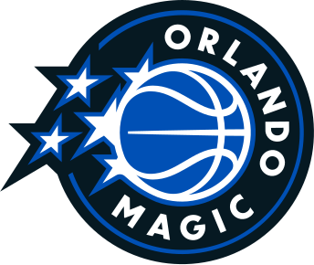

Magic Expand TV Reach Into Tampa Market
A new agreement with Hearst-owned WMOR-TV gives Orlando a full-season broadcast presence in the Tampa market for 2026-27, building on a deal that placed 10 Magic games there the year before.

2026-27 Season
What's happened around the team heading into the 2026-27 season.
A new agreement with Hearst-owned WMOR-TV gives Orlando a full-season broadcast presence in the Tampa market for 2026-27, building on a deal that placed 10 Magic games there the year before.
Orlando's mascot won the league's Mascot of the Year award at the annual NBA Mascot Conference — STUFF's third career win, following 2016 and 2017.
The NBA released the full 2026-27 schedule, and Orlando opens the season at home against the Atlanta Hawks on Wednesday, October 21 at 7:00 PM at Kia Center. Single-game tickets went on sale the following day.
Jonathan Isaac and Jevon Carter re-signed on minimum-salary deals and Nikola Vučević returned on a one-year contract, rounding out one of the least eventful offseasons in the league — no major moves since the July 1 signing period opened.
After trading back in the second round, Orlando selected USF's Izaiyah Nelson with the No. 51 overall pick and signed him to a two-way contract on July 1.
Orlando hired Sean Sweeney, an associate head coach for the San Antonio Spurs last season, to lead the team into 2026-27 after Jamahl Mosley's departure.
Orlando fired head coach Jamahl Mosley after five seasons, closing a stretch that included three straight first-round playoff exits.